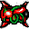

For this year's competition, you will write Java (or Scala, if you prefer) programs that play the game of Battlecode. Battlecode is a realtime strategy game. However, there are a number of differences between Battlecode and other realtime strategy games you may be familiar with.
First, there is no collective player that controls the team. Instead, each robot is controlled by a separate instance of a class, and robots may only share information amongst themselves using radio communication.
Second, there are no collective resources in Battlecode. Instead, each robot can store resource called "flux". Flux may be transferred between nearby robots.
Third, the entire game is run by the Battlecode software; save for a couple exceptions, there is no human intervention during the course of the game.
The rest of this document explains in detail the Battlecode world, and how to write your player.
Professor Mordemort's evil plans were thwarted by Gunface about a year ago, through many strategic battles of territorial conquest. Professor Mordemort went into hiding, and was thought to have been eliminated from the universe. In his hiding, however, he vowed to never be forgotten. He began secretly setting up power grids on planets all over the universe, planning to use all of them to power his final attack on the Coders.
Robots are the central part of the Battlecode world. They come in six varieties, each one having a distinct set of properties. These varieties are denoted by the RobotType enum. The following table describes the different robot types:
|  | Archon | A special unit that produces flux and cannot be spawned. |
| Scout | A fast and lightweight air unit that can heal other units. | |
|
Soldier | A cheap and fast ground unit that attacks other ground and air units at close range. |
| Scorcher | A longer range unit that can damage many units at once. If not used carefully, it can also damage allied units. | |
| Disrupter | A ground unit that can reduce the frequency of its enemies' attacks. | |
| Tower | A ground unit that can only be built on power nodes. Unlike other robots, towers do not execute any code. |
The "round" is the basic unit of time for a Battlecode match. Each round, every robot's player gets to use the processor for a certain amount of computation (see Timing below for more details on this).
During each game round, the existing robots are run sequentially, in their order of creation. All actions (e.g., moving, attacking, message broadcasts) take effect before the remaining robots of the round are run. This means that if Robot 1 was created before Robot 2, and Robot 1 moves during its turn, Robot 2 will see Robot 1 in its new location in the same round. When all robots' computations have been run, the round is over.
Energon is the universal life-force in the Battlecode world. Every robot has an amount of energon, called its energon level. When a robot is attacked, its energon level decreases. If a robot's energon is less than or equal to zero, it is immediately removed from the game.
Each robot has a maximum energon level. Initially, each robot's energon is equal to its maximum energon level. Robots can lose energon by being attacked, and scouts cause nearby robots to regenerate some energon.
Robots need flux in order to perform actions. Flux can be "spent" to create new robots, move, or broadcast messages. Robots are also capable of transferring flux to adjacent robots.
With the exception of Archons, all robots need to consume flux in order to
execute code. Each round, the robot's flux decreases by an amount specified by
GameConstants.UNIT_UPKEEP. If the robot does not have enough flux to pay this
cost, it will not run any bytecodes for that round.
If the robot does not use all of its alotted
bytecodes, then some flux will be refunded for each unused bytecode. The
maximum fraction of upkeep that can be refunded is given by
GameConstants.YIELD_BONUS.
Special units called Archons can produce flux. If archons are too close
together, then their flux production decreases.
If d is the square of the distance to the nearest allied archon, then the amount
of flux produced is
GameConstants.MIN_PRODUCTION+(GameConstants.MAX_PRODUCTION-GameConstants.MIN_PRODUCTION)*Math.min(1.,Math.sqrt((double)d/GameConstants.PRODUCTION_PENALTY_R2)).
Since all units except Archons and Towers consume flux, Archons can only support a certain number of robots each. This imposes a natural unit limit instead of a hardcoded fixed number. The choice of units and their differing decay rates determines how many robots a team may support.
The objective of this year's game is to destroy the opponent's power core.
The game ends when a power core is destroyed. In order to ensure that the
game will end eventually, after a set amount of time, power nodes will
start to take damage at the end of each round. Each team's power nodes will
receive GameConstants.TIME_LIMIT_DAMAGE damage, divided evenly among all
nodes connected to the power core. Furthermore, power nodes will no longer be
able to regenerate.
If both power cores are simultaneously destroyed by end-of-round damage, the winner will be determined by the following criteria, in order:
There are power nodes scattered across the map. A team may capture a power node by building a tower on top of it. A tower may only be built on top of a power node if the team controls an adjacent power node that is connected to its power core. Furthermore, a team may not damage an opponent's tower unless it controls an adjacent power node that is connected to its power core.
Each team starts out with a single tower. The node on which that tower sits is called the team's power core. If a team's initial tower is destroyed, it loses the game.
Battlecode maps consist of a grid of squares, each with a pair of integer
coordinates. Locations on the map are represented as instances of
MapLocation
objects. Each square has a type of terrain: LAND or VOID. Land squares are traversable by all units; void squares are traversable only by airborne units.
Map coordinates are represented similarly to the pixels on a computer screen: x-coordinates increase moving to the right (East), and y-coordinates increase moving down (South). However, as an extra challenge, the top-left corner of the map is not necessarily (0, 0). The coordinates are randomly shifted, so the top-left corner might be (10573, 49972), to pick two random numbers. Thus, map boundaries cannot be inferred using absolute coordinates.
Maps are specified by XML files, and can be found in the maps folder of the release archive. The schema for the files should be fairly intuitive, so if you'd like to add your own maps you can use the provided maps as a basis.
You are welcome to create any map files you'd like, in order to test your players. However, the maps used for the tournaments will abide by the following constraints. If a constraint is not listed here, do not assume that the tournament maps will abide by it.
Matches are all best of 3 games. In each game both players start with 6 Archons. The game ends when a team's power core is destroyed. Then another game is played until one team collects 2 game victories. No information is transferred between games except through team memory as explained below.
This section describes how robots can interact with the Battlecode world. Your player controls robots with the RobotController class. Unless otherwise noted, all methods referenced in this section are methods of RobotController. On its turn a robot may perform these abilities:
A robot may perform one movement action per turn and one attack action per turn. Furthermore, each robot has a movement and attack cooldown. When getRoundsUntilAttackIdle() is 0, the robot may issue attack commands. When getRoundsUntilMovementIdle is 0, the robot may issue movement commands.
Movement actions are performed at the end of a robot's turn. Calling the
associated method like moveForward() or spawn() simply queues that action to be performed at the end of its turn. A robot may continue executing and when ready call yield() to end its turn and perform the action. Or if the robot runs out of bytecodes the action will automatically be performed. This allows actions to be executed at the end of a robot's turn without explicit bytecode counting.
Attack actions are performed immediately. If you sense a robot before and
after an attack, you will see that its energon has decreased.
In general, the effect of an action takes place immediately, even though the action may have a duration of some number of rounds. For instance, when a robot moves, it appears at its new location as soon as its turn ends, and its roundsUntilMovementIdle is set to the appropriate movement delay. The robot would need to wait for the movement cooldown before being able to move again.
The following are the possible actions that a robot can execute.
All attack actions require roundsUntilAttackIdle() to be 0.
Attacking - attackSquare(MapLocation,RobotLevel)
makes a robot attack a specified location. The location must be within the robot's attack range, as defined by its RobotType. If there is a robot at the specified location, that robot will have its energon level decreased by the strength of the attack, as defined by RobotType.attackPower. Attacks damage the target robot immediately. Then roundsUntilAttackIdle is set to RobotType.attackDelay.
Scouts, Disrupters, and Scorchers have special attack abilities. A scout's
attack drains its target's flux rather than reducing its target's energon.
A disrupter's attack increases its target's attack timeout by
GameConstants.DISRUPTER_DELAY in addition to causing damage.
A scorcher's attack hits all ground units
in its attack range.
All movement actions require roundsUntilMovementIdle() to be 0.
Direction - Each robot has a direction, as enumerated by Direction. Calling setDirection(Direction) changes the robot's direction. This action has a duration of 1 round.
Movement - moveForward() and moveBackward() make a robot move one
square forward or backward relative to its current Direction. Moving backward
does not change a robot's direction. A ground robot may move into any square
whose TerrainTile permits ground objects and which is not already occupied by
another ground object. Air robots can move into any square that is within the
bounds of the map and is not occupied by another air robot. Then
roundsUntilMovementIdle is set to RobotType.moveDelayOrthogonal() or
RobotType.moveDelayDiagonal(). Note that moving diagonally takes
approximately sqrt(2) times longer than moving orthogonally.
Spawning - Archons may spawn any other unit using spawn(RobotType). The new robot appears directly in front of and adjacent to the parent robot. Thus, robots can only spawn when the square in front of them is empty and of a terrain type traversible by the child. Child robots initially face in a random direction. They are always on the same team as their parents.
The amount of flux required to spawn each robot is given by its
RobotType.spawnCost. Once a robot executes a spawn, the child robot
appears immediately on the map in front of the parent. It will have
RobotType.maxEnergon energon and zero flux. Both roundsUntilAttackIdle and roundsUntilMovementIdle of the child robot are set to RobotType.wakeDelay.
Robots use their sensors to inspect the world around them. Sensor abilities
are passive, and usually of the form get____ or sense____. These
methods usually require that the target GameObject or map square fall within
the calling robot's sensor range. One notable exception to this is the
senseTerrainTile. Robots automatically remember all terrain they've seen,
so senseTerrainTile returns the terrain type of a square if it has ever been in the robot's sensor range, even if it is not ''currently'' within sensor range.
Robots may broadcast 1 message per turn. This is the only way to communicate
with other robots. A message is an instance of class Message, and contains an
array of integers, an array of Strings, and an array of MapLocations. When a
robot calls broadcast(Message), a copy of the message is instantly added
to the incoming message queue of each robot within the sender's communication
range (not including the sender itself). Communication ranges are always
circular. The receiving robots may use the passive abilities
getNextMessage() or getAllMessages() to retrieve messages from their incoming message queue.
Any field of a Message instance may be null, and any element of an array may be null. Messages are essentially "cloned" when broadcast or received, so a single Message instance may be received, mutated, transmitted, mutated, and transmitted again.
There is no limit to the size of messages, but sending a message requires an
amount of flux that depends on the size of the message in bytes. Each
integer element takes 4 bytes; each MapLocation takes 8 bytes, whether null or
not; and each String element takes up a number of bytes equal to the length,
with a minimum of 4 whether null or not. A null field of a Message (i.e. no
array at all) takes 0 bytes. Sending a message requires
GameConstants.BROADCAST_FIXED_COST in flux, plus
GameConstants.BROADCAST_COST_PER_BYTE flux per byte. See Appendix C.
Robots can transfer flux between themselves using
transferFlux(MapLocation,RobotLevel), which removes a specified amount of flux from the calling robot and adds it to the receiving robot. The receiving robot must be adjacent to or on same square as the transferring robot.
Calling suicide() immediately kills the calling robot and removes it from the
game.
Each team can save a small amount of information for the next game using the
function setTeamMemory(). This information may be retrieved using
getTeamMemory(). If there was no previous game in the match, or no
information was saved, the memory will be filled with zeros..
There are several ways that the user can interact with robots. First, any
robot can use setIndicatorString(int,String) to set a string that is
visible to the user when mousing over the robot. Second, the user can
manually set a long for each robot, which the robot can query using
getControlBits(). Finally, a robot can call breakpoint(), which flags the game engine to pause computation at the end of the round. These methods are for debug purposes only. During tournaments and scrimmages, the user will not be able to interact with the robots. For more information on these debugging interfaces, check out Debugging below.
Only yield() and suicide() end the turn of a robot. Otherwise a turn
ends naturally when the bytecode limit is hit. Other actions may be performed
as many times as attack/movement/broadcast timeouts allow.
Your player program must reside in a Java package named teamXXX, where XXX
is your three-digit team number, with leading zeros included. You may have
whatever subpackages you like. You must define teamXXX.RobotPlayer, which
must have a public static run method that takes one argument of type
battlecode.common.RobotController. Whenever a new
robot is created, the game calls the run method with the robots
RobotController as its argument.
If this method ever finishes, either because it returned or because of an
uncaught exception, the robot dies and is removed from the game. You are encouraged to wrap your code in loops and exception handlers so that this does not happen.
The RobotController argument to the RobotPlayer constructor is very
important -- this is how you will control your robot. RobotController has
methods for sensing (e.g. senseRobotInfo(Robot)) and performing actions
(e.g., moveForward()). If you're not sure how to get your robot to do
something, the Javadocs for RobotController are a good place to start.
Let's start with an example. Here is a simple implementation of RobotPlayer, that runs straight until it hits something, then turns right, then runs straight, etc.:
package examplefuncsplayer;
import battlecode.common.*;
public class RobotPlayer {
public static void run(RobotController myRC) {
while (true) {
try {
while (myRC.isMovementActive()) {
myRC.yield();
}
if (myRC.canMove(myRC.getDirection())) {
myRC.moveForward();
} else {
myRC.setDirection(myRC.getDirection().rotateRight());
}
myRC.yield();
} catch (Exception e) {
System.out.println("caught exception:");
e.printStackTrace();
}
}
}
}
Notice the while(true) loop, which prevents the run method from returning.
While the robot is alive, it will be continually cycling through this loop.
The try/catch block inside the loop prevents the robot from throwing an
uncaught exception and dying. Also notice the while(myRC.isMovementActive()) {myRC.yield();} loop. This loop waits until the robot is movement idle. Once the robot knows it is idle, it checks whether it can move forward in its current direction -- if so, it tries to move forward. Otherwise it tries to turn right.
The above team000 is included in the software release. Try compiling and running it to make sure the software works on your system.
Each robot is allowed a certain amount of computation each round. Computation
is measured in terms of Java bytecodes, the atomic instructions of compiled
Java code. Individual bytecodes are simple instructions such as "subtract" or
"get field", and a single line of code generally contains several bytecodes.
(For details see http://en.wikipedia.org/wiki/Java_bytecode.) Each round,
every player runs a number of bytecodes determined by
GameConstants.BYTECODE_LIMIT. When a robot hits the bytecode limit, its computation is paused while other robots get to do their computation for the same round or the next round. On the next round, the robot's computation is resumed exactly where it left off. Thus, to the robot's code, the round change is invisible. Nothing will jump out and shout at you when a round ends.
Because the round can change at the end of any bytecode, unexpected things can happen. For instance, consider the following example:
Robot[] nearbyRobots = myRC.senseNearbyGameObjects(Robot.class); MapLocation loc = myRC.senseRobotInfo(nearbyRobots[0]);
In the first line, the robot gets a list of all other robots in its sensor range. In the second line, the robot senses the RobotInfo of the first robot in the list. However, what happens if the round changes between the first and second line? A robot that was in sensor range when line 1 was executed might be out of sensor range when line 2 is executed, resulting in an exception. Because of this, your code should be written defensively. Think of this as a "real-world" robot, where things can fail at any time, and you have to be prepared to handle it.
However, there are ways of dealing with this, as we'll see in the next section.
One way to deal with timing complexities is to use yield() judiciously.
Calling RobotController.yield() ends the robot's computation for the current round. This has two advantages.
First, robots receive a significant flux bonus for yielding computation. The
bonus is given by GameConstants.YIELD_BONUS * GameConstants.UNIT_UPKEEP * (fraction of unused bytecodes in the round).
Second, after a call to RobotController.yield(), subsequent code is executed at the beginning of a new round. Then, you have the full amount of bytecodes for your robot to do computations before the round changes. For instance, let's modify the example above to be:
myRC.yield(); Robot[] nearbyRobots = myRC.senseNearbyGameObjects(Robot.class); MapLocation loc = myRC.senseRobotInfo(nearbyRobots[0]);
Since yield is called in line 1, line 2 will be executed at the beginning of a
new round. Since senseNearbyGameObjects() does not take very many bytecodes, it is pretty much guaranteed that there won't be a round change between lines 2 and 3.
A common paradigm is to have a main loop, with a yield() at the bottom of the loop. Thus, the top of the loop is always executed at the beginning of the round. If all the robot's computation for one iteration of the loop can fit in one round, then there should be minimal problems with unexpected round changes. Note that team000 above does this.
The Clock class provides a way to identify the current round (
Clock.getRoundNum() ), and how many bytecodes have been executed during
the current round ( Clock.getBytecodeNum() ).
GameActionExceptions are thrown when an ability cannot be performed. It is often the result of uncertainty about the gameworld, or an unexpected round change in your code. Thus, you must write your player defensively and handle GameActionExceptions judiciously. Each GameActionException has a GameActionExceptionType, which tells roughly what went wrong. You should also be prepared for any ability to fail and make sure that this has as little effect as possible on the control flow of your program.
Exceptions cause a bytecode penalty of GameConstants.EXCEPTION_BYTECODE_PENALTY.
This section deals with some of the mechanics of how your players are run in the game engine, including bytecode-counting, library restrictions, etc.
Players may use classes from any of the packages listed in
AllowedPackages.txt, except for classes listed
in DisallowedPackages.txt.
Furthermore, the following restrictions apply:
Object.wait, Object.notify, Object.notifyAll, Class.forName, and String.intern are not allowed.
java.lang.System only supports out, arraycopy, and
getProperty. Furthermore, getProperty can only be used to get
properties with names beginning with "bc.testing."
java.io.PrintStream may not be used to open files.
scala.Console.readByte() that attempt to read from
standard input will always throw an EOFException.
Note that violating any of the above restrictions will cause the robots to self-destruct when run, even if the source files compile without problems.
Classes in java.util, java.math, and scala and their subpackages
are bytecode counted as if they were your own code.
The following functions in java.lang are also bytecode counted as if they were your own
code.
Math.random StrictMath.random String.matches String.replaceAll String.replaceFirst String.split
The function System.arraycopy costs one bytecode for each
element copied. All other functions have a fixed bytecode cost. These costs
are listed in the MethodCosts.txt file. Functions not listed in
MethodCosts.txt are free. The bytecode costs of battlecode.common
functions are also listed in the javadoc.
Robots must keep their memory usage reasonable. If a robot uses more than 8 Mb of heap space during a tournament or scrimmage match, the robot may be killed.
Throwing exceptions of any kind incurs a bytecode penalty given by
GameConstants.EXCEPTION_BYTECODE_PENALTY, so unnecessary throwing of exceptions should be avoided.
Your player cannot catch virtual machine errors such as StackOverflowError and
OutOfMemoryError. If your robot throws one of these exceptions, it will
die.
Our scrimmage and tournament servers will be running Java 6 and Scala 2.9. The Battlecode software should run on Java 7, but please be aware that our compile server will not recognize Java 7 specific language features.
This section describes some of the features of the game engine intended to make debugging somewhat less painful. Debug mode reveals valuable information about robots at development time but will be turned off for scrimmages and real tournaments.
Any output that your robots print to System.out is directed to the output stream of the Battlecode engine, prefixed with information about the robot.
The game engine has a feature that allows you to separate out debugging code
that is unimportant to your player's performance in the tournament. Methods
that have names beginning with debug_ and that have a void return type
are given special status. By default, these methods are skipped during
execution of the player. When the System property debugMethodsEnabled is
set to true, however, the methods are executed normally except that they do not count against your robot's bytecode limit. Code that prepares the arguments to such a method may consume bytecodes, but the body of the method and any methods that it invokes are not counted.
Your robot can read system properties whose names begin with "bc.testing.".
You can set a property by adding a line to bc.conf like this:
bc.testing.team-a-strategy=experimental
You can check the value of the property like this:
String strategy = System.getProperty("bc.testing.team-a-strategy");
Breakpoints allow you to pause the game engine's calculations. If breakpoints
are enabled (see the software page), and a robot calls
RobotController.breakpoint(), the game engine will stop computing at the end of the round. This gives you a chance to see exactly what's going on in the game when your robot hits a certain point in its code. You can resume the game engine's computation in the client, by hitting the "resume" button. If the match is being dumped straight to a file (i.e., there is no client to resume the game), breakpoints are ignored.
Note that when a robot calls breakpoint(), computation will be stopped at
the end of the round, not immediately when breakpoint() is called.
Depending on the circumstances, you might want to use breakpoint(); yield(); instead.
There are five tournaments: the Sprint, Seeding, Qualifying, Final, and Newbie tournaments. Check the Calendar page for dates and locations. Here, we'll explain the mechanics of how the tournaments are run.
The Sprint Tournament is a single elimination tournament. Contestants are seeded based on scrimmage ranking, and play continues until there is only one undefeated team.
The Seeding Tournament is a single elimination tournament. Contestants are seeded based on scrimmage ranking, and play continues until there is only one undefeated team. The results of this tournament are used to determine seeds for the Qualifying and Newbie tournaments. Teams are ranked by the following criteria, in order:
The Qualifying Tournament is a double elimination tournament (see e.g. http://en.wikipedia.org/wiki/Image:NSB-doubleelim-draw-2004.png). Play continues until there are 8 teams remaining. These teams move on to the Final Tournament. Teams are seeded for the final tournament as follows:
The Final Tournament is another double elimination tournament. The Final Tournament starts with a blank state, i.e., any losses in the Qualifying Tournament are erased.
The Newbie Tournament will run concurrently with the Qualifying Tournament. All teams consisting entirely of MIT students who have not participated in Battlecode before will automatically be entered into the Newbie tournament in addition to the other tournaments. We will announce the format of the Newbie tournament soon.
In order to receive credit for the course, or to be eligible for the newbie
tournament, you must register with an mit.edu e-mail address.
If you already registered with a different e-mail address, please let us know.
You can receive credit for the course by defeating the reference player. You must defeat Teh Devs in an unranked scrimmage on a certain set of maps. These maps will be announced approximately two weeks into the course. If your player beats the reference player, everyone on your team receives 6 credits.
If your submission does not beat the reference player, then you can get credit an alternate way, by sending us a 2-page report on your player: its code design, how it works, an explanation of any AI paradigms you used, etc. We will look over your source code and your report, and if both show a significant amount of effort, thought, and good design techniques, we will give you 6 credits.
We give prizes for the best strategy reports, so we encourage you to submit a report even if you defeat the reference player.
Also, note that you are allowed to drop 6.370 without penalty very late into IAP.
We have both a forum and an IRC
Channel (#battlecode on irc.freenode.net).
Javadocs can be found here, and they are also included in the software distribution.
The javadocs include the values of the game constants and robot attributes.
We also have a handy unit reference chart.
Energon intake is not for everyone. Please consult a physician before use. 6.370 Battlecode Corporation is not responsible in the event of injury due to energon use. Energon's side-effects include loss of limb, death, unbearable pain, tendencies to procrastinate and an unnatural senseless rage. Handle with care. Energon consumption has not been approved by any health agency and you USE IT AT YOUR OWN RISK. For this reason, please be careful when scrimmaging.
January 9
{kind=link}